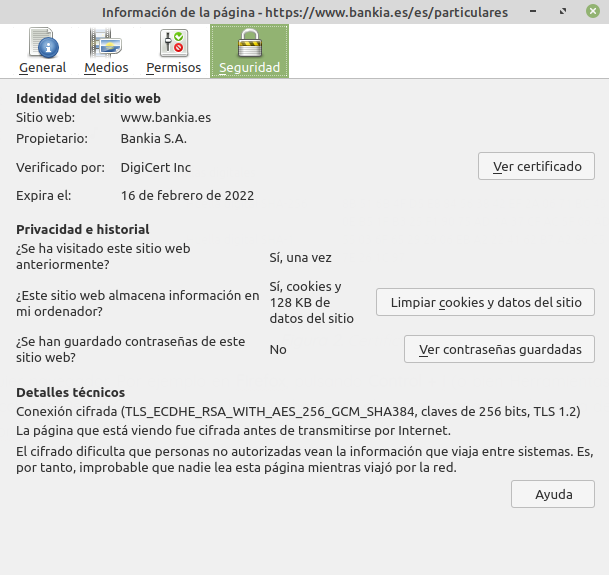

7.2.1 Certificados digitales
1. Introducción
El certificado digital de un usuario es un documento digital que contiene nuestros datos identificativos autenticados por una entidad ya sea un organismo oficial o alguien que acredite que somos quien decimos ser (confirma nuestra identidad de manera digital).
Los certificados digitales son documentos electrónicos emitidos por autoridades de certificación (en adelante AC) que garantizan la identidad de un usuario o servicio electrónico como una página web.
Básicamente un certificado digital es una clave pública de un usuario o servicio, firmada digitalmente con la clave privada de una AC en la que se confía, garantizando que esa clave pública es de quien dice ser.
Ejemplo: En el caso del DNI electrónico, la AC de la Policía Nacional firma digitalmente la clave pública del certificado ciudadano que está introducido en el chip de su DNI.
Por tanto, un certificado digital es un documento digital mediante el cual un tercero confiable (una autoridad de certificación) garantiza la vinculación entre la identidad de un sujeto o entidad y su clave pública. Existen variados formatos para certificados digitales, los más comúnmente empleados se rigen por el estándar UIT-T X.509.
Con el certificado digital se pueden realizar gestiones como por ejemplo con: ayuntamientos, seguridad social, agencia tributaria, registros mercantiles.
Figura 1. Acceso al ayuntamiento de Burriana con certificado digital.
También, los certificados digitales se pueden emplear para:
- Firma digital de software o documentos.
- Cifrar un mensaje.
Los certificados pueden ser de varios tipos según su uso:
- Personales.
- Servidor.
- Software.
- Entidad de certificación.
Los certificados también pueden clasificarse en función del nivel de verificación que se hace al concederlos por parte de la AC:
- Clase 1. Para usuarios y destinado al correo electrónico.
- Clase 2. Se emiten para personas y para servidores o dispositivos y se realiza una mayor verificación de la identidad que en clase 1. Los certificados para personas de clase 2 resultan adecuados para las firmas digitales, el cifrado y el control de acceso electrónico en transacciones en las que la prueba de identidad basada en información de la base de datos de validación es suficiente. Los certificados de dispositivo o servidor de clase 2 resultan adecuados para la autenticación de servidores, la integridad de mensajes, software y el cifrado.
- Clase 3. Se emiten a personas, organizaciones, servidores, dispositivos y administradores de AC y autoridades de certificados raíz. Los certificados individuales de clase 3 resultan adecuados para las firmas digitales, el cifrado y el control de acceso en transacciones donde se asegura la prueba de identidad. Los certificados de servidor de clase 3 resultan adecuados para la autenticación de servidor; la integridad de mensajes, software y cifrado. Dan un mayor nivel de confianza debido a que exigen un proceso de verificación presencial.
- Clase 4. Para trámites on-line entre empresas.
- Clase 5. Para empresas privadas y de seguridad del gobierno.
Otro tipo de clasificación de los certificados en función de la validación que se hace para la organización que lo solicita es:
- Domain Validated (DV): tienen el nivel más bajo de verificación porque sólo se comprueba que el dominio pertenece al solicitante. La confirmación por parte de la AC se hace enviando un email al correo que figura en la información de la base de datos whois del dominio registrado o bien enviando un archivo de verificación que el solicitante coloca en el sitio web para que la AC compruebe que le pertenece dicho dominio.
- Organization Validated (OV): tienen un nivel más alto de confianza porque además de comprobar el dominio, verifican la identidad de la organización a la que pertenece el dominio. El nombre de la organización también aparecerá en el certificado, dando confianza añadida de que tanto el sitio web como la compañía son de confianza. Suelen ser utilizados por empresas, gobiernos y otras entidades que desean proporcionar una capa adicional de confianza para sus visitantes.
- Extended Validation (EV): son los más seguros y confiables y a la vez los más caros porque requieren un proceso de validación mucho más complejo por parte de la AC y la solicitud de mucha documentación a la organización solicitante. Además de mostrar el nombre de la organización en el certificado, también aparecerá en color verde en la barra de direcciones, al lado del candado. Lamentablemente, algunos navegadores como Firefox o Chrome han decido eliminar la barra verde debido a que consideran que los usuarios no aprecian esta función.
2. Elementos de los Certificados digitales
Principalmente hay dos tipos de certificados:
- Certificados X.509 emitidos por Autoridad de Certificación (CA).
- Certificados PGP (Pretty Good Privacy). Se generan por nosotros en una empresa.
Un certificado digital contiene información como:
- Número de versión.
- Número de serie.
- Nombre del emisor (AC).
- Nombre del sujeto.
- Periodo de validez.
- Clave pública del sujeto.
- Método de verificación de la firma.
- Firma digital del certificado por parte de la AC.
- Extensiones de certificado.
En la siguiente figura se pueden comprobar la información que contiene un certificado digital de un servidor web seguro (HTTPS) de un banco:
Figura 2. Certificado del banco BBVA.
Esta información puede obtenerse usando cualquier navegador. Por ejemplo en Firefox, pulsando Control + i (o bien Herramientas, Información de la página), pestaña Seguridad, botón ver certificado. También puede hacerse en el candado de la barra de direcciones. Desde Chrome puede hacerse haciendo clic en el candado de la barra de direcciones y después seleccionar Conexión, Datos del certificado. La siguiente imagen muestra la misma información desde Firefox:

Figura 2. Acceso al certificado del banco Bankia desde Forefox
Los certificados digitales pueden encontrase en varios estados:
- Emitido: se encuentra en vigencia y por tanto es válido.
- Expirado: ha finalizado su periodo de validez y es necesario renovarlo (en la imagen superior la fecha de expiración es 16 de febrero de 2022).
- Revocado: es un certificado que no es válido y ha sido incluido en una lista de revocación (CRL) debido a que la clave privada se ha visto comprometida o ha habido cambios en los datos asociados al certificado
- Suspendido: es una revocación temporal por las mismas razones que el revocado, pero es una situación reversible.
3. Soportes de los certificados
Los certificados pueden ir en varios soportes como por ejemplo:
- Fichero en disco duro o USB.
- Tarjetas smartcard (como el DNI-e).
- tarjetas criptográficas.
- token USB.
4. Pasos para obtener un certificado
Ya sea como persona física o bien, para montar un servidor web seguro, se puede solicitar un certificado a una AC siguiendo los siguientes pasos:
- El solicitante (persona física o una empresa) realiza una solicitud (CSR, Certificate Signing Request) enviando sus datos a la autoridad certificadora.
- La Autoridad de Certificación verifica la identidad del solicitante de un certificado antes de su expedición, de forma presencial habitualmente.
- Al expedir el certificado, la AC lo firma con su clave privada, garantizando su validez.
- La AC envía al solicitante el certificado.
- Los certificados suelen ser para personas físicas o para servidores (ejemplo: https).
En algún momento del proceso, es necesario generar el par de claves (privada y pública) asociadas al solicitante. Hay dos opciones, siendo la segunda la más recomendable y usada:
Método 1: La autoridad al crear el certificado crea un par de claves:
- Clave privada: contenida en el propio certificado digital.
- Ni el usuario ni la CA deben proporcionar el certificado a otros.
- La CA no se queda con copia del certificado.
- Si se pierde, se debe pedir uno nuevo.
- Clave pública: guardada por la CA y proporcionada a todo el que la solicite
Método 2: para evitar que la CA pueda tener la clave privada el solicitante puede generar una petición de certificado (CSR) desde su ordenador, que enviará a la autoridad certificadora, y así no le envía su clave privada, que siempre la tendrá él en su ordenador.
5. Proceso de validación y verificación de un certificado
Los pasos que se siguen cuando un parte quiere validar el certificado que le envía la otra parte, como por ejemplo un navegador web cuando se conecta a una página web segura:
- Conseguir el certificado de la otra parte.
- Verificar la validez del certificado:
- Dentro del período de validez.
- Certificado no revocado.
- Firma electrónica de la AC correcta.
- Verificar la firma digital del resumen o hash del mensaje con la clave pública del emisor.
- El receptor debe estar en posesión de la clave pública de la AC (instalada en su navegador, por ejemplo), con lo que podrá comprobar la firma electrónica de la AC del certificado.
6. Autoridad de certificación
La Autoridad de Certificación es una entidad fiable y reconocida regional o mundialmente, encargada de garantizar de forma unívoca y segura la identidad asociada a una clave pública. Realiza las siguientes tareas:
- Recibe y procesa peticiones de certificados (CSR) de los usuarios finales.
- Consulta con una Autoridad de Registro para determinar si acepta o rehúsa la petición de certificado
- Emite el certificado
- Gestiona Listas de Revocación de Certificados (CRLs)
- Renueva certificados
- Proporciona:
- Servicios de backup y archivo seguro de claves de cifrado.
- Infraestructura de seguridad para la confianza, políticas de operación segura e información de auditoría.
Algunas de las principales autoridades certificadoras son:
- Internacionales: Verisign, GlobalSign, Thawte Certification, Comodo, etc
- En España: FNMT, ACCV (GVA), Edicom, etc.
Cualquiera puede crear su propia AC con el software adecuado (por ejemplo Openssl). El problema es generar reputación y confianza por el resto para ser incluido en los repositorios de AC, como las que vienen de serie en nuestro navegador.
Se pueden consultar las AC de nuestro ordenador, dependiendo del software que utilicemos. Por ejemplo en el navegador Firefox se pueden consultar desde menú Ajustes, Privacidad & Seguridad, Certificados, botón Ver certificados, pestaña Autoridades:
Figura 3. Acceso a las autoridades desde Firefox.
Obra publicada con Licencia Creative Commons Reconocimiento No comercial Compartir igual 4.0